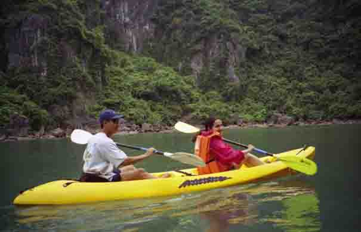

May 17, 2001 • Halong Bay, Vietnam • by sue_and_nathan
Where the dragon flailed his tail
Halong Bay, Vietnam
Halong Bay is the product of millions of years of erosion and chemical reactions working on limestone to produce around 300 islands rising from the Gulf of Tonkin. Legend has it that the islands were created by a dragon who careered into the sea here cutting the bay of rocks as he flailed his great tail. The truth is that at the end of the Ice Age when the glaciers began to melt the sea level rose turning hills into islands.
And, we had the pleasure of experiencing Halong Bay for two days on a private mini-adventure for two with Seacanoe (http://www.seacanoe.com). The night was spent on the escort boat - just the two of us with seven crew members to look after us! - and the two days paddling in kayaks around the bay.
The seven crew members, well six and a guide called Thanh, were all just brilliant. In the tiny galley of the boat they cooked up the freshest, tastiest seafood meals and there was a constant noisy, cheerful banter going on between them (not that we understood a word!!) Last night Thanh taught us how to play Chinese Chess and some the crew gathered round to give us some gestures of encouragement and advice. Needless to say, we got beaten hands-down every time (our only excuse being that we couldn't quite suss out what was going on half the time!)
The canoeing, of course, was the highlight of the days. We'd get into the canoes (one of us in each with a guide) and paddle off in the direction of the limestone crags jutting out of the sea. We paddled around in between the rocks, but best of all, we'd canoe into the caves, dark as night, into the heart of the limestone. When we shone our flashlights into the darkness the light would be met by wonderful stalagmites and stalagtites and then the high-pitched sounds of the bats we'd disturbed swooping down around our heads. Shining the light down into the water we could see tiny jellyfish, sea urchins and brightly coloured coral. We paddled some more until we could see the daylight coming from the mouth of the cave and out there were the most beautiful hidden lagoons of turquoise waters, and silent too but for the sound of the cicadas singing and the splash of our paddles. Just amazing to be in the middle there surrounded by sheer limestone rockfaces covered in lush green mangrove vegetation.
This morning we canoed through a floating fishing village called 'The Gate of the Sea'. A funny little place - maybe about 40 floating houses complete with a floating school, a floating hairdresser and, the hub of the village, a floating karoake bar! As we canoed through people came out to have a look at the crazy foreigners who go canoeing in the rain for pleasure.
At the beginning of this little adventure we were a bit disappointed with the weather in Halong - raining a little and overcast all of the time. As soon as we started paddling we were quite relieved for the cool (ish) air and when it rained it only did so for a couple of minutes at a time. Plus the fact that the low-lying clouds added to the mystique of the place and perhaps there was a dragon out there somewhere?
We're back in Hanoi now for one night of luxury in the Metropole Hanoi (http://www.sofitel-hanoi-Vietnam.com) - one of Vietnams great luxury hotels. We're sitting in a bar listening to a live jazz saxophonist and sipping beer. We're whacked, but very happy and feeling that all-over satisfied feeling that our yearaway is all about.

Sue canoeing in Halong Bay with Thanh, our guide